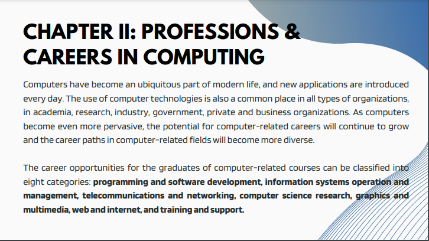
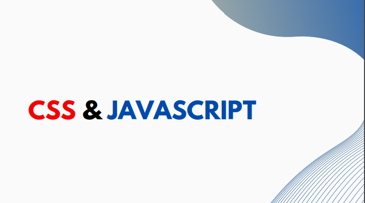

I learned so much in this topic it's is a crucial part of our daily interactions with technology. It's the backbone of how we communicate with computers and how they provide us with valuable information
This lesson is about how we use a technology is a form of a computing like using smartphone, swiping a debit, etc.
This lesson is about the computing using a machine that process information. Examples of information like numbers to text, basically you can retrieve the information using computer.
This topic is the career opportunities for computer related can be classified there are 8 categories such as: programming, software development, information systems operation, etc.
This topic is about the four phases of the cycle to process the information/data.
LESSONS I CHALLENGED THE MOST
This topic is a bit confusing because, at first, I don't know the meaning of the code or what to put the styles of the CSS, but after the lesson, I quietly understood the parts and the code.
This topic was about the css and javascript well at first I'm a bit confused on how to put a jscript but now i'm learning how to put a jscript on the code for have a dynamic interface in making a personal website.

This is what I'm challenged the most making our personal website with 3 navigations while making my website well it's difficult because I have no knowledge in making one but thanks to the internet, because I watched tutorial on how to put a html and css animations and I learned so much in making my final output in Introduction to computing.